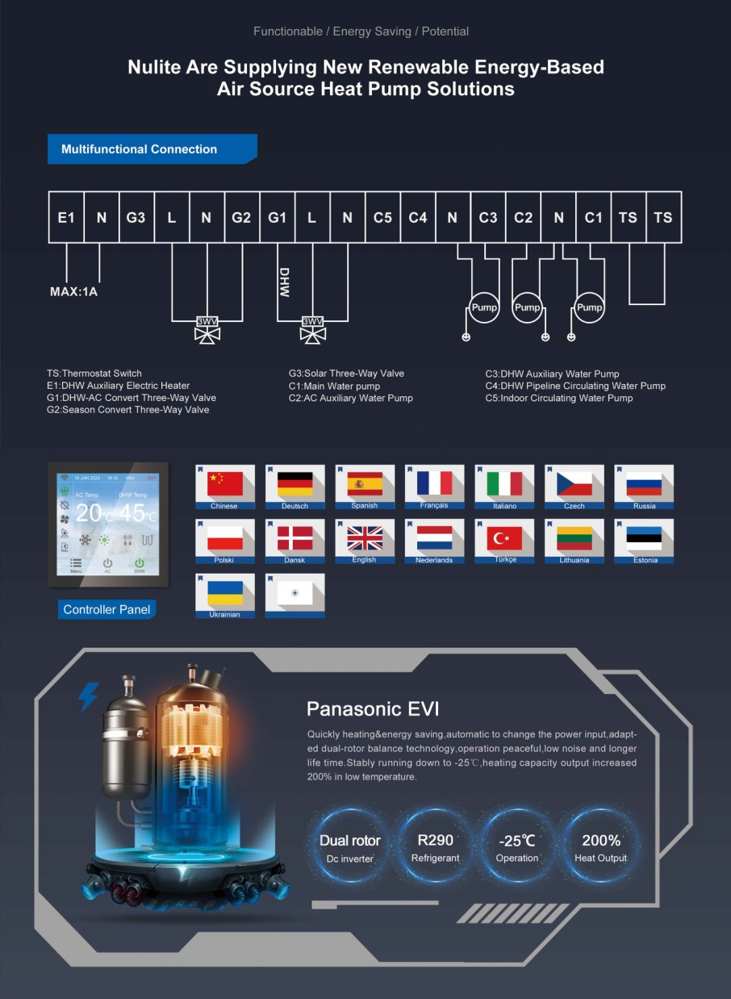

R290
Natürliches Kältemittel mit sehr niedrigem Treibhauspotenzial.
NULITE · R290 HIGH TEMPERATURE AIR SOURCE HEAT PUMP
Nulite R290 Luft/Wasser-Wärmepumpen für Heizen, Kühlen und Warmwasser – mit technischer Betreuung in der Schweiz.
Die R290-Serie kombiniert EVI- und DC-Inverter-Technologie mit einem hydronischen 3-in-1-System. Die Geräte sind für Raumheizung, Kühlung und Warmwasser ausgelegt.
Natürliches Kältemittel mit sehr niedrigem Treibhauspotenzial.
Leistungsanpassung für unterschiedliche Betriebsbedingungen.
Je nach Betriebszustand und Modell sind hohe Vorlauftemperaturen möglich.
Regelung, Betriebswerte und Schnittstellen für die Systemintegration.
TECHNOLOGY
Die NuLite-Unterlagen zeigen eine vielseitige Systemeinbindung mit Warmwasserspeicher, Heiz- und Kühlkreisen, Pumpen und 3-Wege-Ventilen. Für die Schweiz steht die fachgerechte hydraulische und elektrische Einbindung im Mittelpunkt.

R290 FLAMINGO SERIES
Nenn-Heizleistung bei A7/W35 gemäss NuLite-Unterlagen.
* Technische Werte sind modell- und betriebszustandsabhängig. Massgebend sind die Unterlagen und das Typenschild des konkreten Geräts.
SERVICE · SCHWEIZ
Die technische Dienstleistung in der Schweiz wird durch KLIMA-WP erbracht. Anfrage und Dokumentation laufen direkt über unsere bestehenden Serviceprozesse.
TECHNISCHE DOKUMENTATION
NULITE SERVICE SCHWEIZ
FAQ
Ja. Über das Inbetriebnahmeformular können Anlage, Installationsstand und vorhandene Unterlagen übermittelt werden.
Ja. Für Wartung und Störung stehen separate Formulare zur Verfügung. Bei Störungen können unter anderem Fehlercode, Fotos und Anlagendaten erfasst werden.
Die technische Dienstleistung wird durch KLIMA-WP erbracht. KLIMA-WP ist ein eigenständiger technischer Serviceanbieter und diese Seite ist keine offizielle Schweizer Herstellervertretung von NuLite.
Mehr zu unserem markenunabhängigen Klima-, Kälte- und Wärmepumpenservice.
Zu KLIMA-WP ↗